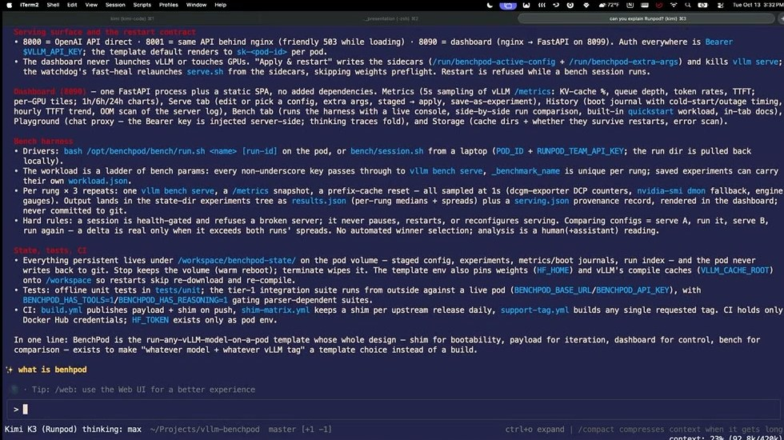

Most self-hosted LLM configs ship on guesswork
When a new open-weight model lands, teams want it running right away, so they copy the base vLLM recipe without touching its flags. Vela's problem slide sums up what happens next: wrong vLLM version, wrong max-model-len, wrong parallelism, discovered at concurrency 40 in production at 2 a.m. Outdated releases such as vLLM 0.27 lack support for newly released model layers, leading to startup errors or degraded outputs when teams skip nightly builds.
Sizing mistakes compound the version drift. Teams routinely request a full million-token context window for basic summarization tasks that never need it, while picking the cheapest possible GPU without calculating KV-cache headroom for concurrent users. Moving from an R&D pod to a production service requires actual latency and concurrency measurements you can show a manager or staff engineer rather than gut feel.
“A lot of times, I see people are using the wrong v11 version. They might they're probably not using the nightly version. They have the wrong size for the contacts window.”00:01:14
- Default vLLM recipes get a model booting, not ready for concurrent production load.
- Newly released open models often require nightly vLLM builds rather than older pinned versions.
- Context window length and GPU memory have to be sized around workload concurrency and KV-cache demand.
Evidence: transcript 00:00:00, 00:01:14 · watch the serving guesswork breakdown
BenchPod replaces 30-minute cold-start loops with live reloads and a watchdog
Tuning vLLM flags on a raw GPU pod normally means editing container settings, restarting the image, and waiting up to 30 minutes for large model weights like Kimi K3 to download and load back into GPU memory. That friction discourages teams from testing more than one or two configurations.
BenchPod packages prebuilt vLLM versions, an nginx proxy on port 8000, a FastAPI telemetry and control app on port 8090, a persistent volume for cached weights, and a process watchdog inside one Docker template. Instead of rebuilding containers, you paste or apply a vLLM YAML config and the watchdog relaunches the serving process against cached weights, bringing cold-start recovery down to roughly nine minutes. The same watchdog also handles production faults: when a GPU failed on Runpod's four-node internal Kimi deployment the Sunday before the talk, the cluster self-healed without internal users noticing.
“You have to wait for cold starts to happen. It's all this loading, and you're not moving as fast. You're waiting like 30 minutes like for Kimi K3 to like download the weights, loading the GPU.”00:03:28
- Restarting uncached pod images turns every flag change into a 30-minute wait for weight downloads.
- BenchPod pairs persistent weight storage with a watchdog that reloads vLLM directly from a YAML file.
- Multi-node watchdog recovery kept a weekend GPU failure invisible to internal users.
Evidence: transcript 00:03:28, 00:06:31 · watch the BenchPod architecture overview
Running Kimi K3 exposes real hardware and CUDA constraints
Vela used Moonshot AI's Kimi K3 as his primary test case because Runpod's own engineers rely on it for long-horizon coding and trading agents. His slide notes why the model is attractive: a million-token design, FP8 KV cache support, and weights that fit on a single 8-GPU B300 pod.
In practice, hardware and driver details still bite if you do not verify them on the target machine. On their setup, Vela could practically run about half of the advertised million-token context window, which still proved plenty for long agent tasks with strong KV-cache reuse and fast time-to-first-token. Driver versions mattered just as much: Kimi failed under CUDA 12.8 and required CUDA 13.0, a host-level detail BenchPod surfaces directly in its GPU telemetry panel.
“if you're running Kimmy, it doesn't work on a twelve eight. CUDA works on thirteen point zero”00:06:31
- Kimi K3 fits on one 8-GPU node with FP8 KV cache, making it practical for long agent trajectories.
- Usable context in practice was roughly half the nominal one-million-token ceiling, which still covered long tasks.
- Host software mismatches such as CUDA 12.8 versus CUDA 13.0 break serving before model flags even matter.
Evidence: transcript 00:03:28, 00:06:31
Every metric and config reload is a FastAPI call an agent can drive
In the Runpod console, deploying BenchPod means picking the template, attaching a storage volume, choosing available GPUs such as B300 or H200 NVL, or clicking "Deploy when available" when high-end supply is tight. Once booted, the web UI exposes Overview, Serve, Playground, and Benchmarks tabs alongside startup cache status, live GPU metrics, and an automated error scanner.
Vela built the entire dashboard atop backed-up FastAPI endpoints rather than locking controls inside browser state. A human engineer can use the OpenAI-compatible chat playground and visual charts for an eagle's-eye view of the instance, while a coding agent can call the exact same endpoints directly to push a YAML change, run a load test, inspect errors, and keep iterating without touching the UI.
“It's all based fast API calls, so your agent easily just call all those things. You can actually just serve everything. Like you don't even have to use the UI.”00:06:31
- BenchPod's UI covers host GPU telemetry, error scans, config swaps, an OpenAI playground, and load runs.
- Every dashboard capability is backed by FastAPI endpoints with persistent metric storage.
- Coding agents can automate the tune-and-benchmark loop directly over HTTP without human clicks.
Evidence: transcript 00:06:31, 00:09:46
One pod, two configs: larger batch tokens cut p99 inter-token latency by 60%
To show why single-knob experiments beat defaults, Vela compared two Kimi K3 configurations on the same pod across concurrency levels ramping from 1 to 8 to 64 concurrent requests, changing only the maximum batched tokens passed through vLLM. At single-user concurrency, median time-to-first-token barely moved: 216.59 ms on the baseline Config A versus 211.83 ms with longer batch tokens.
Under 64-way concurrency, the trade-off became unmistakable on his results slide. Median time-to-first-token rose 19.4%, from 1,966 ms to 2,348 ms, and aggregate output throughput nudged up 1.7% from 2,004 to 2,048 tokens per second. The real win was p99 inter-token latency, which dropped from 195 ms down to 78 ms, giving 60% smoother streaming that finishes long agentic jobs noticeably faster. Once proven on a single pod, that winning config promotes cleanly to multi-node clusters or autoscaling serverless workers without guesswork.

“But an interesting thing that I did notice of increasing that is like the inter-token latency actually decreases quite a bit when you increase that batch tokens”00:09:46
- Raising max batched tokens barely changed single-user TTFT and traded +19.4% median TTFT at concurrency 64.
- At concurrency 64, p99 inter-token latency fell from 195 ms to 78 ms, cutting stalls on long agent runs.
- Proving a config on one pod prevents serverless deployments from thrashing on unvalidated base recipes.
Evidence: transcript 00:09:46 · watch the A/B batch-token benchmark comparison
Right-size the model first, and save disaggregated serving for massive scale
Benchmarking also reveals when a frontier open model is overkill. Runpod hosts roughly 50 internal users across self-hosted instances of Kimi, GLM, DeepSeek, and smaller models so teams are not tied to external APIs. For routine workloads, Vela pointed out that running DeepSeek on four H200 GPUs handles traffic well at far lower cost, leaving heavier Kimi deployments for long, detailed tasks behind smart routers.
During Q&A, an audience member asked about disaggregated prefill-and-decode serving. Vela answered that while Runpod supports Ray cluster serving and external KV-caching layers such as LMCache, single- or four-node BenchPod setups already cover dozens to hundreds of internal users cleanly; disaggregated serving and dedicated cache tiers earn their complexity once traffic scales toward millions of users.
“And just because it's the frontier model, it doesn't make sense. Like I said, like guy runs deepseek on a 48200s and does a really good job. Kimmy's more for like long tasks that I'm trying to solve something like very detailed.”00:14:05
- Four H200 GPUs running DeepSeek cover everyday tasks economically; reserve frontier models like Kimi for deep, long-context work.
- BenchPod's four-step workflow (bench on a pod, compare configs, ship the winner, repeat) bridges R&D to serverless scale.
- Disaggregated serving over Ray and dedicated KV-cache layers matter when scaling from internal teams to millions of users.
Evidence: transcript 00:09:46, 00:14:05, 00:16:10